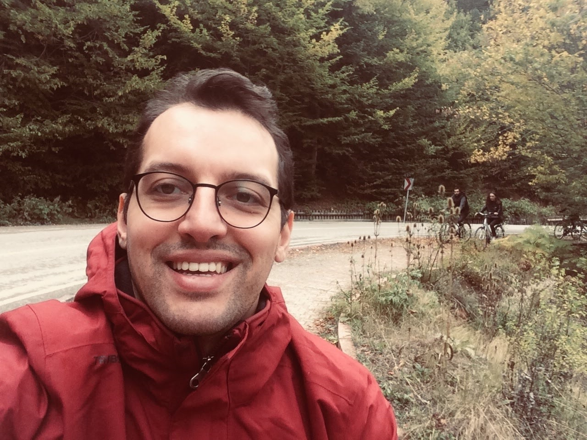

2x AWS Certified professional with a background in engineering and 7+ years of experience in technical consultancy. At Turkish Navy, consulted the delivery of mission critical systems in excess of
$40 million in total. Acted as an intermediary between end users and contractors, gained exceptional ability to successfully communicate technical difficulties and
solutions to both big and small audiences through written and vocal communication. Strong passion for
learning about cloud-based solutions and delivering them to customers.
- Education
-
MSc in EE: University of Southern California
BSc in EE: Turkish Naval Academy
- Certifications
-
AWS Solutions Architect Associate: March 2022
AWS Cloud Practitioner: December 2021
Google Project Management Certificate: May 2021
- Projects
-
Project name: project description
Project name: project description
- Skills
-
Phyton - Linux - Communication - Leadership - Collaboration
- Experience
-
Project Engineer Turkish Naval Research Center - 09/2014 - Present
- Coordinated and monitored 4 different projects (RF, EO/IR
systems, EW Database Management Systems) in excess of
$40 million.
- Collaborated with teams of 100+ contractors to resolve
conflicts and best serve clients' needs. Performed
acceptance tests to ensure compliance with required
standarts.
- Prepared and issued RFP documents (scope of work, technical requirements, ILS, system specification) for prototype industrialization projects.
- Managed team of 5 engineers, planned, organized and
performed infrared signature measurements of naval
platforms.
- Prepared and presented project status reports and field
exercise final reports to executive-level leadership of Turkish
Naval Forces.
- Planned and organized 3 electronic warfare field exercises which included 20+ personnel,helicopters and maritime patrol aircrafts. Achieved a high protection rate against guided missiles.
Electronics Officer Turkish Navy - 09/2010 - 07/2012
- Managed warship’s Electronics Systems Division of 10
employees.
- Supervised the use and maintenance of 10+ electronic
systems within the warship.
- Executed the operation of the ship above water as a watch officer.
- References
- Available on request